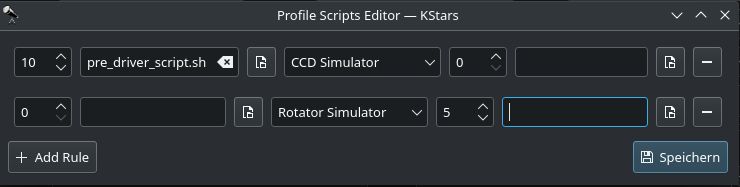
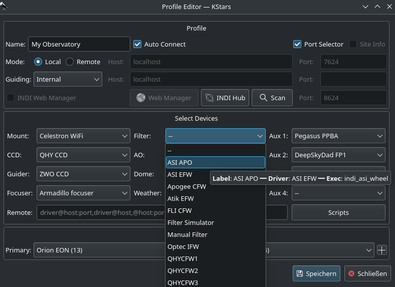

- Profils
Vous pouvez définir des profils pour votre matériel et leur mode de connexion en utilisant l'Éditeur de profil. Ekos est livré avec le profil qui peut être utilisé pour démarrer des périphériques de simulations à des fins de démonstrations :
Mode de connexion : Ekos peut être démarré soit en local soit à distance. Le mode en local est quand Ekos tourne sur la même machine que le serveur INDI, c'est-à-dire tous les périphériques sont connectés directement (physiquement) à la machine. Si vous exécutez le serveur INDI sur une machine distante (par exemple sur un Raspberry PI), vous devez configurer l'adresse de l'hôte du serveur INDI ainsi que son port d'écoute.
Connexion automatique : sélectionnez cette option pour activer la connexion automatique de tous vos périphériques après le démarrage du serveur INDI. Si vous ne choisissez pas cette option, les périphériques INDI seront créés mais ne seront pas automatiquement connectés. Cela est utile lorsque vous souhaitez modifier le pilote (c'est-à-dire modifier le débit en bauds, l'adresse IP ou tout autre réglage) avant la connexion.
Sélecteur de port : cochez cette option pour activer le sélecteur de port. Cette option est cochée par défaut lors de la création d'un nouveau profil. Elle sert à sélectionner les ports de communication série et réseau des périphériques du profil de matériel. A la première connexion au matériel, une fenêtre apparaît où il est possible de régler ces ports avant d'établir une connexion. Cette option est désactivé une fois connecté. Elle peut être réactivée dans l'éditeur de profil.Sélecteur de port : cochez cette option pour activer le sélecteur de port. Cette option est cochée par défaut lors de la création d'un nouveau profil. Elle sert à sélectionner les ports de communication série et réseau des périphériques du profil de matériel. A la première connexion au matériel, une fenêtre apparaît où il est possible de régler ces ports avant d'établir une connexion. Cette option est désactivé une fois connecté. Elle peut être réactivée dans l'éditeur de profil.
Informations sur la position : sélectionnez cette option si vous souhaitez qu'Ekos charge les données de position et de fuseau horaire courantes au démarrage avec ce profil. Cela peut être utile lorsque vous vous connectez à un emplacement géographiquement distant et pour qu'Ekos puisse se synchroniser.
Guidage : sélectionnez l'application de guidage que vous souhaitez utiliser. Par défaut Ekos utilise le module de guidage interne. Les applications externes incluent PHD2 et LinGuider.
Gestionnaire Web INDI : le gestionnaire web de StellarMate est un outil web pour démarrer et éteindre les pilotes INDI. Vous devriez toujours choisir cette option quand vous vous connectez à distance à un appareil StellarMate.
Sélection de périphériques : sélection de périphériques par catégories. Veuillez noter que si vous possédez un CCD avec un guide, vous pouvez laisser vide la liste déroulante du guide puisqu'Ekos détectera automatiquement le guide depuis le CCD. De même, si votre CCD intègre une roue à filtres, vous ne devez pas spécifier de périphérique de roue à filtres dans le menu de la liste déroulante.
Scripts : permet d'ajuster les scripts pré et post chargement pour chaque pilote. Une règle peut être définie pour chaque pilote si un délai est nécessaire avant ou après son chargement. Les champs avant le menu déroulant de sélection de pilote sont exécutés avant le chargement du pilote, et ceux se trouvant après le menu déroulant seront exécutés après son chargement. Le champ du script doit contenir un emplacement complet vers le script et posséder les droits adéquats. Les scripts sont exécutés dans l'ordre avant le reste des pilotes de profil du matériel.Scripts : permet d'ajuster les scripts pré et post chargement pour chaque pilote. Une règle peut être définie pour chaque pilote si un délai est nécessaire avant ou après son chargement. Les champs avant le menu déroulant de sélection de pilote sont exécutés avant le chargement du pilote, et ceux se trouvant après le menu déroulant seront exécutés après son chargement. Le champ du script doit contenir un emplacement complet vers le script et posséder les droits adéquats. Les scripts sont exécutés dans l'ordre avant le reste des pilotes de profil du matériel.

- Démarrer & Arrêter INDI
Démarrer et arrêter les services INDI. Le tableau de bord d'INDI sera affiché dès que le serveur INDI aura démarré. Vous pouvez modifier ici quelques options des pilotes comme les ports de connexion etc.
- Connecter & Déconnecter les périphériques
Connexion au serveur INDI. Selon les périphériques connectés, les modules EKOS (CCD, Mise au point, Guidage, etc.) seront démarrés et prêt à être utilisés.
Dès que vous êtes prêt, vous pouvez cliquer sur pour démarrer le serveur INDI et connecter votre matériel. Ekos créera les icônes des modules (Monture, Acquisition, Mise au point, etc.) au fur et à mesure que la connexion aux différents périphériques sera effective.
